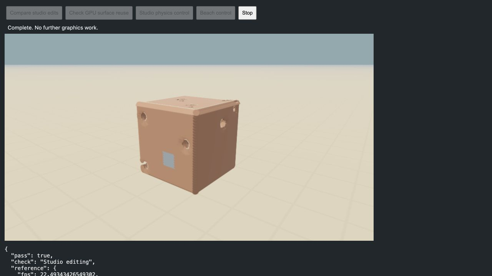

CPU sculpt updates reuse unchanged regions. Geometry and rendered output match exactly.
| Measured during editing | Before | After |
|---|---|---|
| Average update latency | 231 ms | 17.7 ms — 13× faster |
| Average FPS | 22.49 | 22.30 — no gain |
| Simulation | Paused during authoring in both modes | |
64 tests and both builds pass. The combined GPU comparison stopped at its completion guard during the unchanged reference; GPU reuse remains disabled. Further rendered physics checks are gated. Full evidence and limitations
